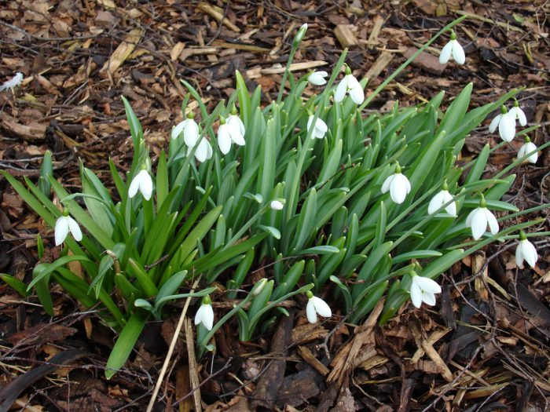

Кращі багаторічні квіти для дачі
У багатьох людей дача асоціюється з джерелом овочів і фруктів. Однак на дачній ділянці можна вирощувати і розкішні квіти. Так, приклавши не надто багато зусиль, можна буде незабаром милуватися чарівними ароматними квітами. Велика частина дачників для прикраси своєї ділянки вибирає багаторічні квіти для дачі, тому що вони вимагають меншої кількості уваги і турботи. Нижче представлені найбільш поширені багаторічні декоративні квіти, які зможуть протягом декількох років прикрашати вашу дачу. Щоб цвітіння тривало протягом усього сезону, необхідно зробити добірку квітів таким чином, щоб коли відцвітають одні, зацвітали б інші. Якщо ви робите клумбу, то в неї садять такі рослини, за якими потрібно доглядати однаково. Не рекомендується поряд з низенькими рослинами садити високі, тому що другі будуть заглушати перші. Які квіти підходять для посадки на дачній ділянці, цвітіння яких доводиться на весну?
- Проліски
- Крокуси
- Мускарі
Зміст
Існує велика кількість рослин, які зацвітають у весняний час і при цьому стають чи не єдиною прикрасою дачної ділянки на даний період. Нижче перераховані найбільш популярні з них.
Проліски
Таким рослинам не страшні морози, і показуються з-під землі вони вже в перший весняний місяць. Їх рекомендується садити в безпосередній близькості від чагарників, а також дерев. Варто пам'ятати, що цвітіння у них досить нетривалий, а після його закінчення частина знаходиться над землею відмирає.
Крокуси

Розкриття таких ніжних квіточок відбувається разом з пролісками. Вони розпускаються на самому початку весни і виглядають дуже ефектно і свіжо. А щоб домогтися ще більшої ефектності, поруч можна посадити такі квіти різних забарвлень. Крокуси рекомендується саджати під кущами і деревами, на відкритому місці, посеред газону або в контейнері.
Мускарі

Такі милі весняні квіти припали до смаку великому числу дачників. Вони мають не зовсім звичайним зовнішнім виглядом. Різні види можуть відрізнятися термінами цвітіння. Найбільш ранні розквітають у березні. За таким рослиною не потрібно особливого догляду, і воно може розмножитися самостійно дітками. При посадці даний факт необхідно врахувати, тому що перенести таку квітку в інше місце буде вкрай складно. Рекомендується висаджувати цибулини разом з горщиком.